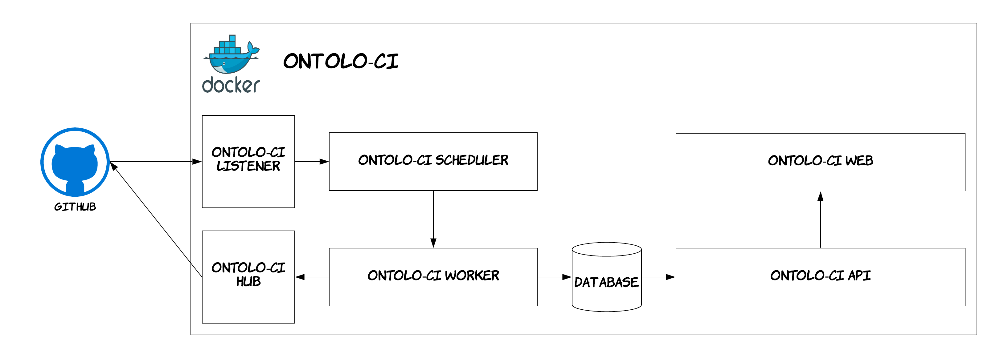
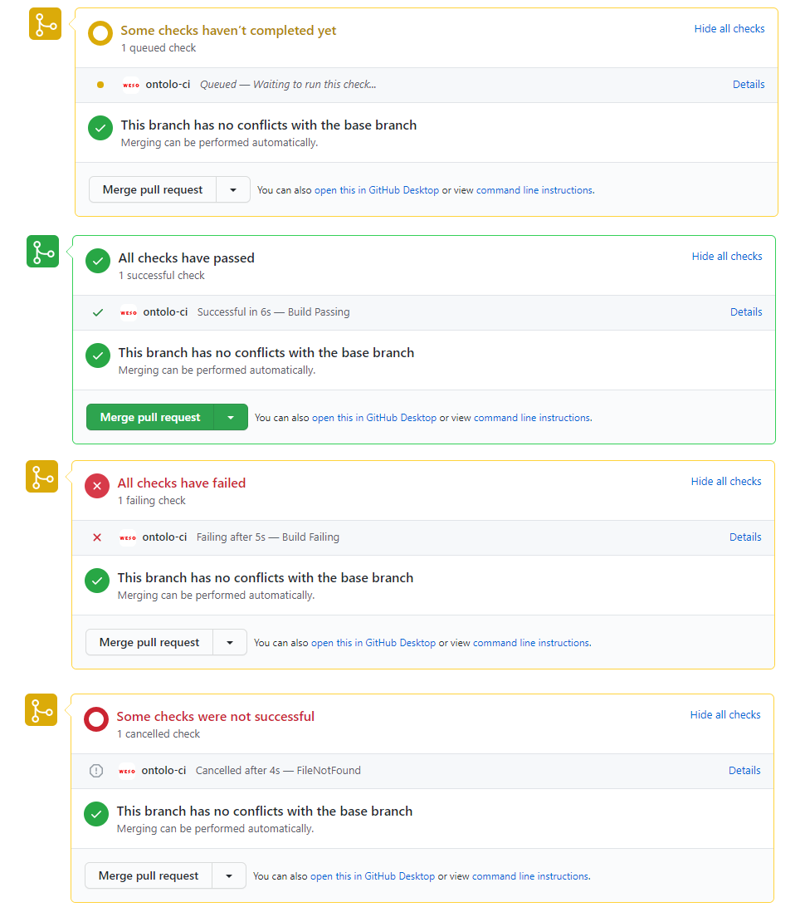
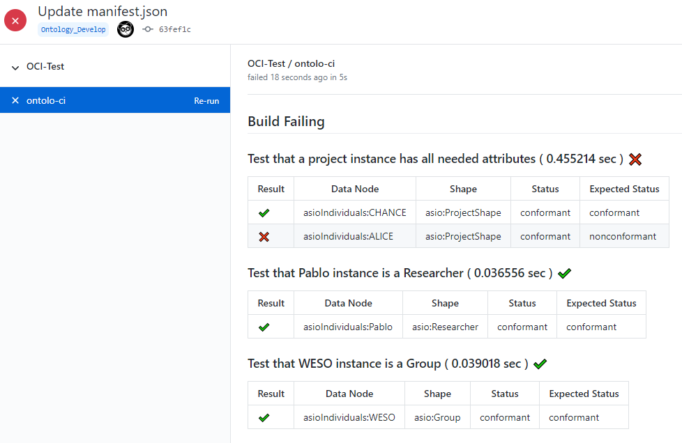
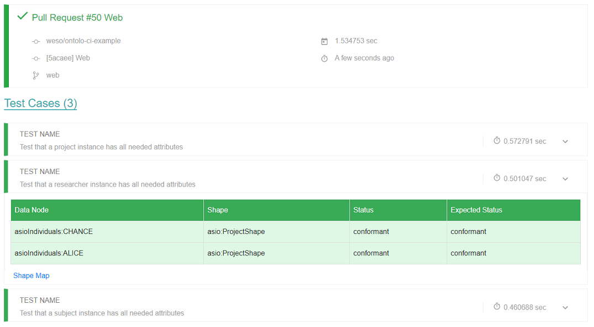

Welcome to Ontolo-ci
Ontolo-CI is a docker based system that integrates with GitHub to provide a continuos integration system for ontologies. It uses Shape Expressions and test instances in order to validate ontologies.Although inspired in Travis-CI and many other continuos integration systems, Ontolo-CI is focused on develop continuos integration for ontologies. This is done by means of test instances and Shape Expressions. Furthermore, Ontolo-CI is integrated with GitHub, so you can add it as a check to Pull Requests or Pushes to different branches.
The following diagram illustrates the architecture of Ontolo-CI. As can be seen, it can be deployed as a docker container in any machine. Then it will listen to GitHub Webhooks. Whenever a webhook from github arrives it inmediatelly schedulles a build and after the build is finished Ontolo-CI will notify GitHub and publish the data on its webpage.
Docker Container
Ontolo-CI is shipped as a Docker container so that anyone can deploy its own instance on demand. Inside the Docker container there are several components that work together. The following schema shows them.
- Ontolo-CI Listener:The listener component receives notifications from GitHub when a Pull Request is started or when commits are pushed. This notifies the scheduller about the new build to perform.
- Ontolo-CI Hub:It acts as a GitHub API interface client. It allows the system to collect files from GitHub but also to inform about the status of the builds.
- Ontolo-CI Scheduller:This component receives builds to schedule from the listener, then creates a worker with the build and schedules its execution.
- Ontolo-CI Worker:Each worker contains a build to execute. A build is a set of tests to execute over an ontology. It only knows how to execute tests when told and who to notificate when finished.
- Database:When a build is finished by a worker the results of the build are stored in a database. Up to now the results that are being stored are: repo, branch, event, result. Where the result stores not only the results of the test cases, but also the execution time and other metrics.
- Ontolo-CI API:The API provides an access layer for thrid party services that need to explore the data from an Ontolo-CI instance. It is also used by the web service. It only allows reading data at the time.
- Ontolo-CI Web:Is a Web interface that stores the results of all executions schedulled, under execution and executed.
Results
Every time ontolo-ci executes a build, the results are posted on GitHub and also on the ontolo-ci website.GitHub Check Runs
Ontolo-ci uses Check Runs in order to provide detailed feedback on commits. Every time a push or a pull request is made, ontolo-ci creates and updates a check run with the status of the validation proccess.
GitHub Details View
Once the validation has finished, we can see a more detailed view in the details section of the checkrun:
Website
Each ontolo-ci instance has it´s own website. The Website shows all the builds that has been executed throught ontolo-ci.
Dashboard View
The Dashboard View shows all the builds that has been executed over the ontolo-ci instance. Each Build contains:
- Repostory where the build cames from
- Owner of the repository
- Commit name
- Branch of the commit
- Branch Number
- Commit ID: Commit identifier
- Execution Time: Time taken to perform all the test cases
- Date when the build has been executed
Specific Build View
There is a specific view for each build. This view shows all the test cases that make up the build. The users can see the details of the validation proccess for any test. The detailed view of a test case shows the validation an the expected result for each node with it´s shape. It is also possible to see the full shape map result of the test case.
